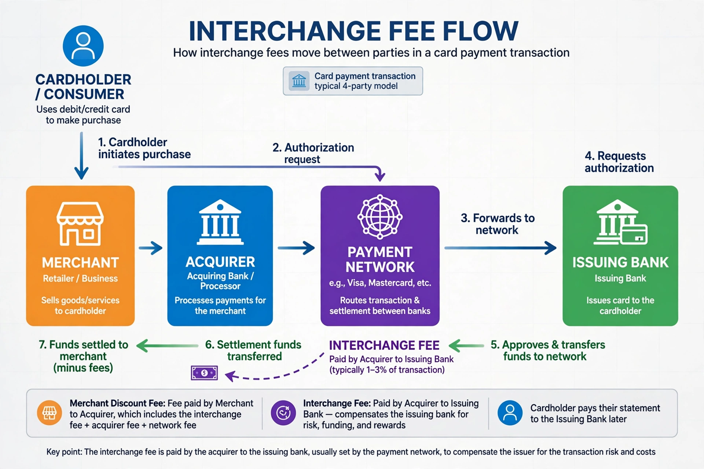

An interchange fee is a fee paid between banks for the acceptance of card-based transactions. Usually for sales/services transactions it is a fee that a merchant's bank (the 'acquiring bank') pays a customer's bank (the 'issuing bank'). In a typical four-party card scheme, interchange flows to the issuer and helps fund rewards, fraud protection and interest-free periods on a credit card.

When a cardholder pays, the merchant receives the purchase amount minus a merchant discount rate, of which interchange is typically the largest component. Card networks such as Visa and Mastercard set default interchange schedules varying by card type, merchant category and transaction channel; premium rewards cards usually carry higher rates.
Merchants have long criticised interchange as excessive and anticompetitive, leading to litigation and regulation: the U.S. Durbin Amendment (2010) capped debit interchange for large issuers, and the EU capped consumer card interchange at 0.2% (debit) and 0.3% (credit) in 2015. Networks and issuers such as the Discover network argue fees fund innovation, security and rewards.